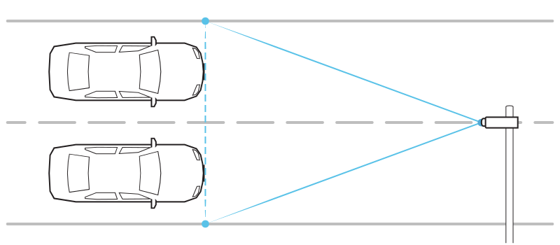

2. Pasy ruchu¶
Biorąc pod uwagę liczbę pasów, które mają być pokryte przez wykrywanie pojazdów, pozycja kamery ANPR względem pasa powinna być zgodna z poniższymi podrozdziałami.
2.1. 1 pas¶
Kamera ANPR obejmująca jeden pas ruchu może być zainstalowana albo w obrębie pasa, albo na jego krawędzi:

Upewnij się, że przód pojazdu jest widoczny wystarczająco długo w polu widzenia kamer - oznacza to, że pole widzenia powinno być głównie szersze niż pas ruchu (około 2 razy).
2.2. 2 pasy¶
Aby wykrywać dwa pasy, kamera ANPR powinna być zainstalowana na linii oddzielającej pasy:
Ostrzeżenie
Nie zaleca się instalowania kamery na skraju drogi ze względu na wysokie prawdopodobieństwo zacienienia pojazdów (brak widoczności tablicy rejestracyjnej). Jeśli technicznie nie ma innej możliwości, lepiej zainstalować kamerę na skraju szybszego pasa, gdzie jeździ mniej ciężarówek.
2.3. 3 pasy¶
Dla trzech pasów, kamera ANPR powinna być zainstalowana nad środkowym pasem:

Ostrzeżenie
Dla trzech pasów ruchu należy pamiętać o ograniczeniach dotyczących minimalnej wysokości znaków na tablicy rejestracyjnej. W takim przypadku istnieje ryzyko, że taki wymóg nie zostanie spełniony, przez co poziom wykrywania pojazdów i jakość rozpoznawania tablic rejestracyjnych będą niższe niż oczekiwano.